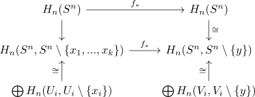

degre and local degree
Proposition
Let $f: S^n \rightarrow S^n$ be a continuous map and $n \geq 1$. Assume there exists a $y \in S^n$ such that
for some $k \geq 0$ and that there exist open neighbourhoods $U_i$ of $x_i$ such that $f$ is a local homeomorphism at $U_i$. Then it holds for the singular homological degree
see:
Proof
w.l.o.g. we may assume, that $U_i$ are pairwise disjoint, after applying hausdorffness and intersecting finitely many times.
Then it follows for $X \coloneqq S^n, A \coloneqq S^n \setminus \{x_1,...,x_k\}, U \coloneqq S^n \setminus \bigcup U_i$ by excision theorem, since $\overline{U} = U \subseteq \mathrm{int}(A) = A$, that
where the last isomorphism follows from relative singular homology commutes with coproducts
Moreover there exists an isomorhpism
making following diagram commute
